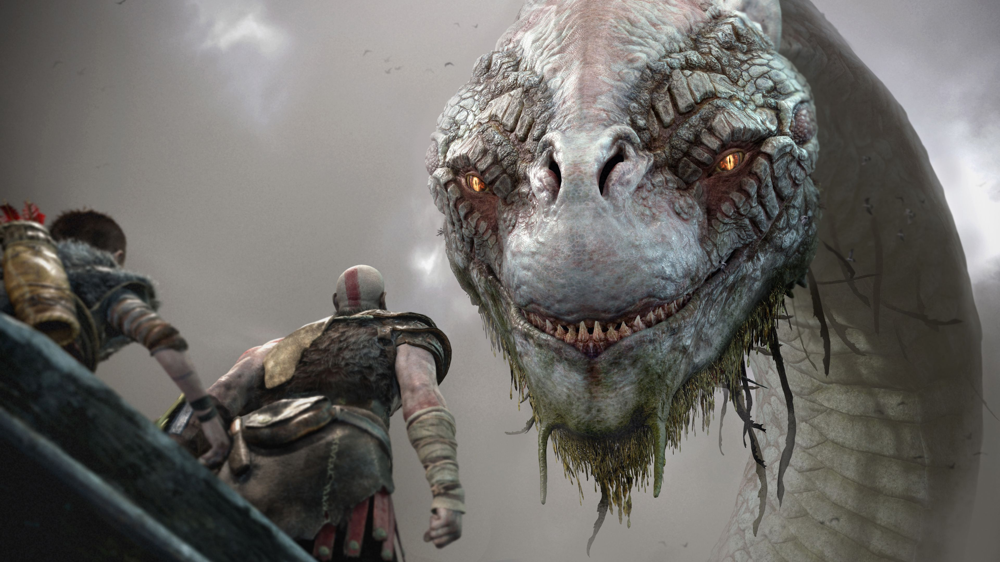
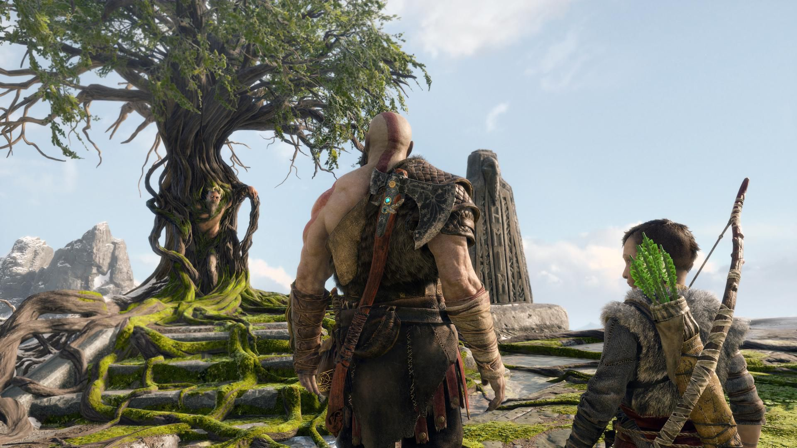
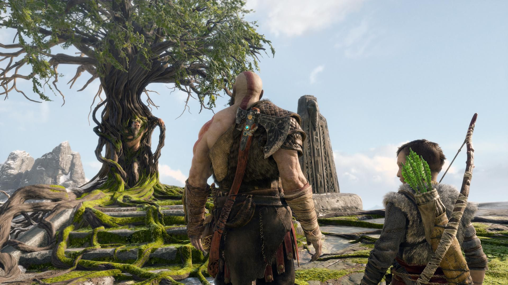
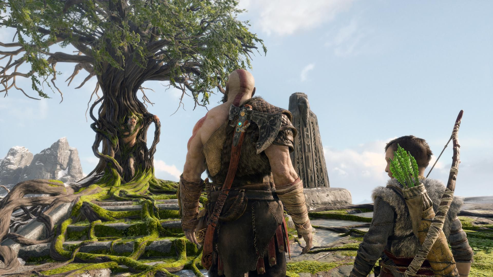
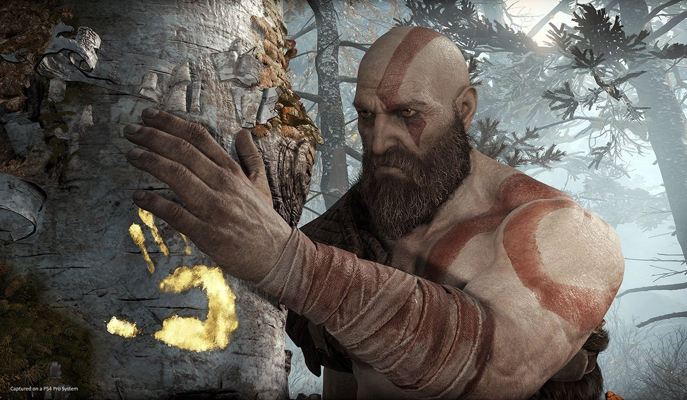

About
God of War (also known as God of War IV) is the sequel to God of War III as well as a continuation of the canon God of War chronology. God of War is the eighth installment in the franchise overall.
Many years have passed since Kratos took his vengeance against the Olympian gods. Having survived his final encounter with his father Zeus, Kratos has since travelled to Midgard in Ancient Norway and now lives with his young son Atreus in the world of the Norse gods, a savage land inhabited by many ferocious monsters and warriors. In order to teach his son, whose mother (and Kratos's second wife) has recently died, how to survive in such a world, Kratos must master the rage that has driven him for many years and embrace his newfound role as a father and a mentor.

 


